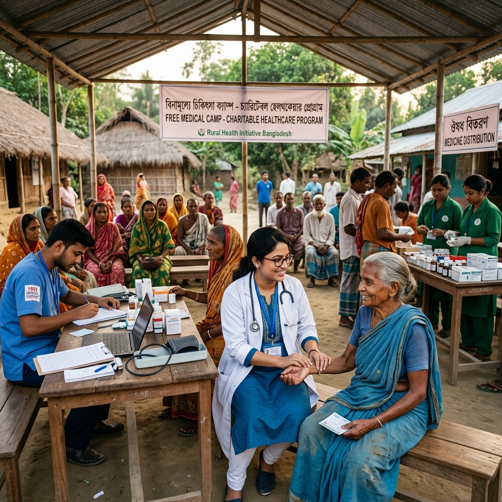
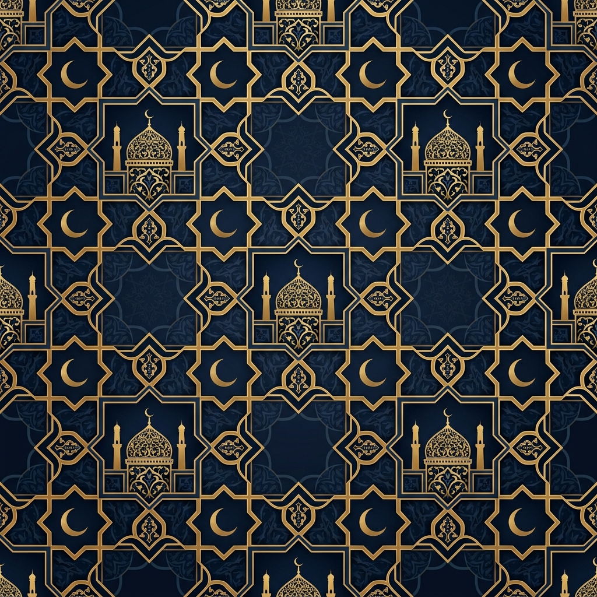
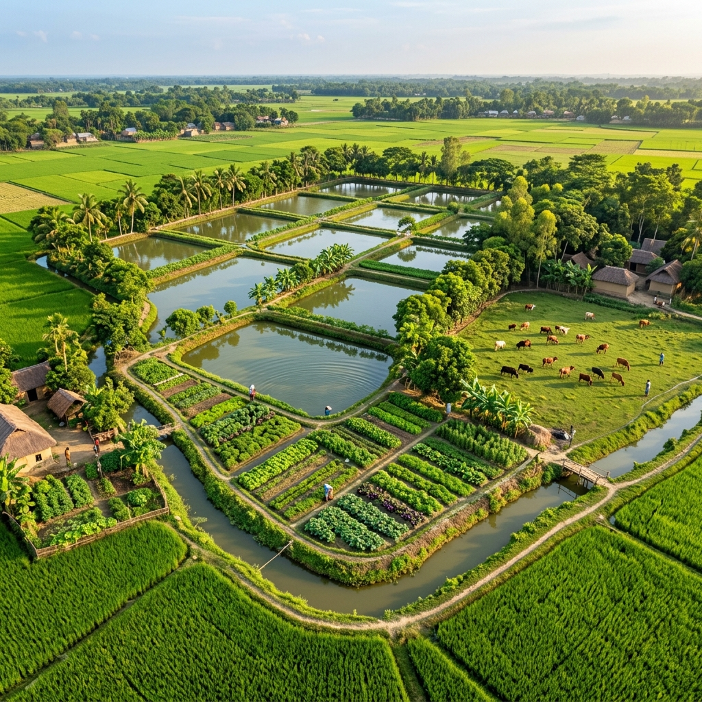

Gallery
Moments of Impact
A glimpse into the lives we touch and the communities we uplift through our ongoing activities.




Dua Foundation is committed to creating lasting positive change through a wide range of welfare activities. From community development and education to healthcare and agricultural programs, our initiatives are designed to uplift the underprivileged and foster a spirit of unity, cooperation, and shared prosperity. Explore our current endeavors and our vision for the future below.
A non-political voluntary welfare organization dedicated to achieving noble ideals and meaningful goals for the betterment of society.
CurrentAwakening mutual cooperation, sympathy, and understanding among members to strengthen the bonds of our community.
CurrentOrganizing forest feasts, Eid reunions, Milad Mahfil, Seeratunnabi celebrations, sports events, and drama performances to enrich cultural life.
CurrentDedicated programs to improve the living standards of helpless and poor people through direct assistance and sustainable support.
CurrentMaintaining a strictly non-political stance while remaining active and responsive during national emergencies when duty calls.
CurrentTaking an active role in preventing child marriage through awareness campaigns, community education, and direct intervention.
CurrentAll members are firmly committed to neither giving nor taking dowry, setting a powerful example for social change.
CurrentAdopting new voluntary welfare programs as needed, with the approval of the general assembly, ensuring responsive community service.
CurrentEstablishing a special fund to provide scholarships to poor and meritorious students, empowering the next generation through education.
FutureObserving important national and international days with due dignity and respect to foster patriotism and global awareness.
FutureComprehensive programs for orphans, helpless and disabled individuals, alongside anti-drug awareness campaigns for a healthier society.
FutureEstablishing a charitable hospital with government permission to provide affordable healthcare services to the underserved community.
FuturePromoting fish farming, organic farming, tree plantation, cattle and goat farming, and poultry to build sustainable livelihoods.
FutureVaccination drives, anti-dowry campaigns, adult education programs, and self-employment initiatives for community empowerment.
FutureSocial forestry programs alongside efforts to establish electricity, gas, and telephone connections for rural development.
Future
Our agricultural development initiative aims to transform rural livelihoods through sustainable farming practices and diversified income sources. By equipping community members with modern techniques and resources, we envision a self-sufficient, prosperous future.
This program is designed to create long-term economic stability while preserving our natural environment for generations to come.
A glimpse into the lives we touch and the communities we uplift through our ongoing activities.

